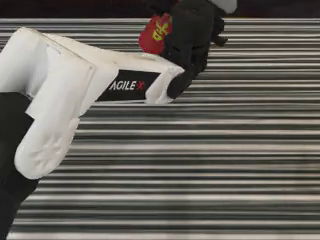
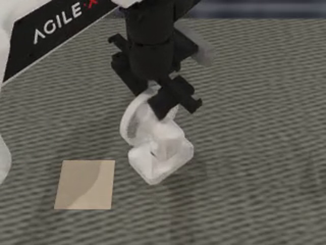
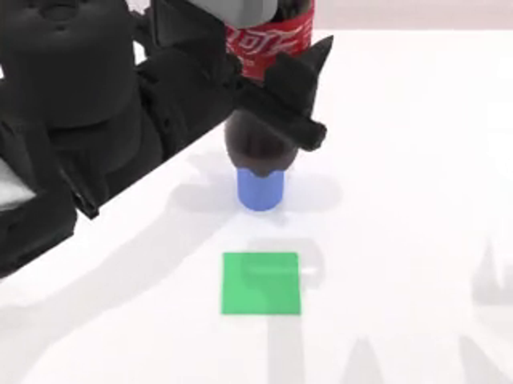
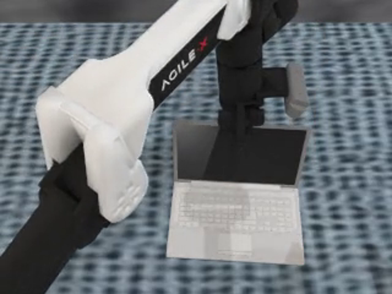
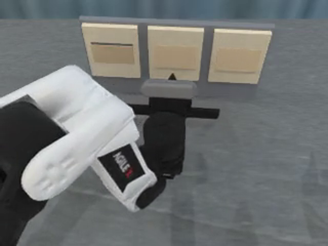

Tasks
RoboInF contains eight base tasks built on RoboTwin 2.0. Each task has six to twelve expert-validated instruction branches that start from the same initial scene and robot state. In total there are 63 branch types, 566 eligible scenes and 4,242 demonstrations.
Each task page shows two branches side by side, the instruction template and its variables, every branch of one shared scene as a video, the checker conditions used for scoring, the clear and randomized appearance, and per-task results. Hover over (or tap) a branch video to play it.
Instruction aspects
Instruction conditions are organized around three aspects. A task can combine several of them, for example a target object together with the arm to use.
| Aspect | Conditions | Tasks |
|---|---|---|
| Goal selection | Which object, destination, or articulated component to operate. | Place Bottle, Select Switch |
| Procedural adherence | Arm assignment, routes, motion patterns, repetition counts, or operation orders. | Place Bottle, Shake Bottle, Select Switch, Transport via Divider, Sort Blocks in Order, Press Buttons in Order |
| Fine-grained specification | Quantities such as object orientation, holding pose, joint angle, and contact region. | Shake Bottle, Orient Fan, Open Laptop |
Evaluation protocol
The test split contains 861 instruction branches. Each one is evaluated under test_clear and test_random. Sibling branches share the same physical scene and camera configuration. Each clear/random pair also shares its instruction and action budget, and test_random reuses RoboTwin's domain randomization for textures, backgrounds and lighting. Policies replan every 20 actions until the task's action budget is reached. The simulator then advances 250 passive physics steps before final scoring.
Dataset statistics
| Task | Candidate scenes | Eligible | Branches / scene | Eligible rate (%) | Train | Val | Test | Expert iterations | Action budget |
|---|---|---|---|---|---|---|---|---|---|
| Place Bottle | 287 | 63 | 8 | 21.9 | 296 | 104 | 104 | 10 | 400 |
| Shake Bottle | 75 | 63 | 8 | 84.0 | 296 | 104 | 104 | 8 | 700 |
| Orient Fan | 72 | 63 | 8 | 87.5 | 296 | 104 | 104 | 5 | 400 |
| Select Switch | 109 | 84 | 6 | 77.1 | 300 | 102 | 102 | 2 | 400 |
| Transport via Divider | 210 | 94 | 6 | 44.8 | 336 | 114 | 114 | 10 | 400 |
| Open Laptop | 87 | 64 | 9 | 73.6 | 342 | 117 | 117 | 2 | 700 |
| Sort Blocks in Order | 100 | 89 | 6 | 89.0 | 318 | 108 | 108 | 5 | 1,000 |
| Press Buttons in Order | 66 | 46 | 12 | 69.7 | 336 | 108 | 108 | 10 | 600 |
| Total | 1006 | 566 | – | 56.3 | 2520 | 861 | 861 | – | – |
A candidate scene is eligible only when the expert satisfies JR on every instruction branch. Splits count episodes and are partitioned by scene.
Task catalog

 clear ↔ random
clear ↔ random

clear ↔ random

clear ↔ random
 clear ↔ random
clear ↔ random
 clear ↔ random
clear ↔ random

clear ↔ random
 clear ↔ random
clear ↔ random

clear ↔ random